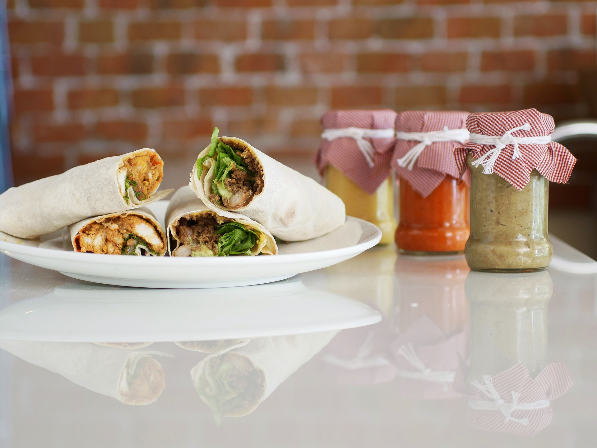

Easy Chicken Fajita Recipe

Ingredients
- 2 large chicken breasts, finely sliced
- 1 red onion, finely sliced
- 1 red pepper, sliced
- 1 red chilli, finely sliced (optional) For the marinade
- 1 heaped tbsp smoked paprika
- 1 tbsp ground coriander pinch of ground cumin
- 2 medium garlic cloves, crushed
- 4 tbsp olive oil
- 2 large chicken breasts, finely sliced
- 2 large chicken breasts, finely sliced
To serve
6 medium tortillas
bag mixed salad
230g tub fresh salsa
Cooking Method
Cooking made simple
- STEP 1 Heat oven to 200C/180C fan/gas 6 and wrap 6 medium tortillas in foil.
- STEP 2 Mix 1 heaped tbsp smoked paprika, 1 tbsp ground coriander, a pinch of ground cumin, 2 crushed garlic cloves, 4 tbsp olive oil, the juice of 1 lime and 4-5 drops Tabasco together in a bowl with a big pinch each of salt and pepper.
- STEP 3 Stir 2 finely sliced chicken breasts, 1 finely sliced red onion, 1 sliced red pepper and 1 finely sliced red chilli, if using, into the marinade.
- STEP 4 Heat a griddle pan until smoking hot and add the chicken and marinade to the pan.
- STEP 5 Keep everything moving over a high heat for about 5 mins using tongs until you get a nice charred effect. If your griddle pan is small you may need to do this in two batches.
- STEP 6 To check the chicken is cooked, find the thickest part and tear in half – if any part is still raw cook until done.
- STEP 7 Put the tortillas in the oven to heat up and serve with the cooked chicken, a bag of mixed salad and one 230g tub of fresh salsa.